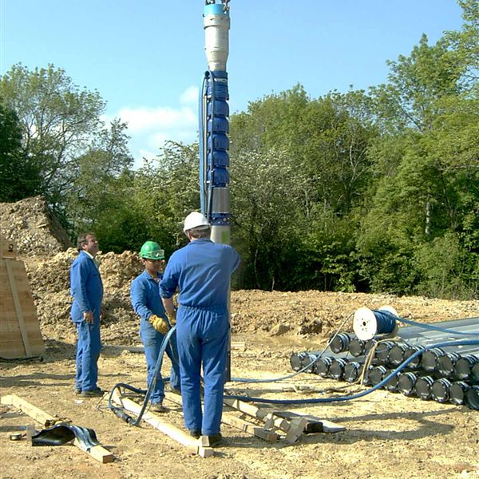
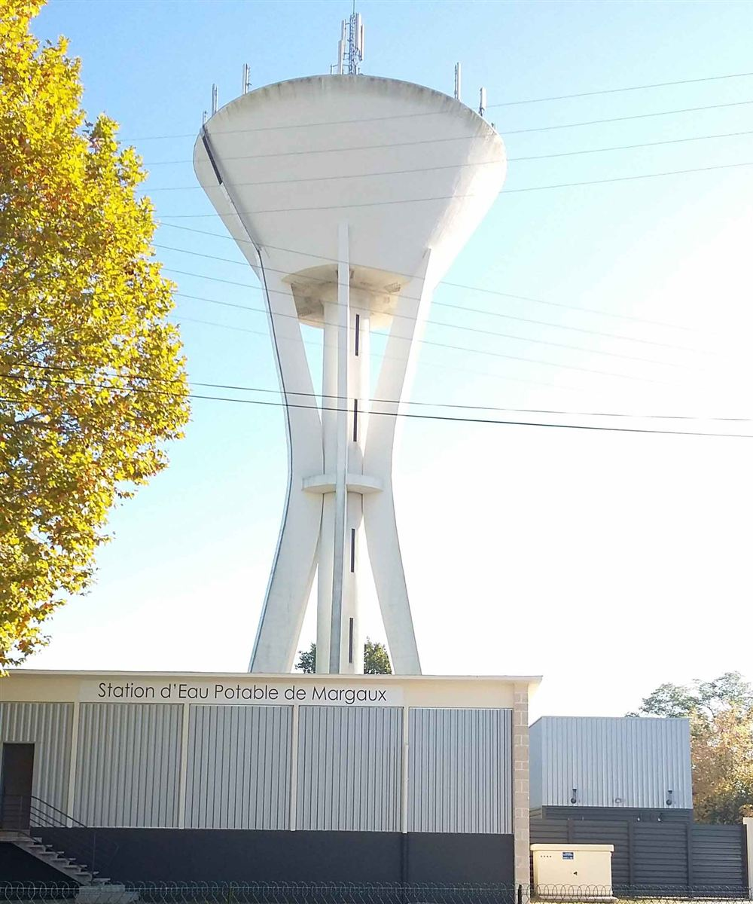

Une eau potable sûre
du captage au robinet
Ressource, traitement, stockage et distribution : SOCAMA conçoit et accompagne les ouvrages d’eau potable des collectivités, en études, en maîtrise d’œuvre et en assistance à maîtrise d’ouvrage.
Parler de votre projet

Toute la chaîne de l’eau potable
Captage · Traitement · Stockage · Distribution
Du forage jusqu’au robinet, nous intervenons sur chaque ouvrage du réseau d’eau potable, en étroite collaboration avec les services de l’État, les Agences Régionales de Santé et les exploitants.
-
Ressource
Forages et captages à créer ou à réhabiliter, avec les hydrogéologues.
-
Potabilisation
Filière de traitement adaptée à l’origine de l’eau et à la qualité attendue.
-
Stockage
Diagnostic et conception de réservoirs et châteaux d’eau.
-
Distribution
Réseaux modélisés pour garantir qualité, débit et pression.

Votre projet dans le cycle de l’eau
01 · Eau potable
Pompage et ressource
Avec les hydrogéologues et les services de l’État, nous définissons les forages et captages à créer ou à réhabiliter, dans le respect de la protection de la ressource.
02 · Eau potable
Traitement et potabilisation
Choix de la filière de traitement selon l’origine de l’eau et la qualité attendue au robinet, en lien étroit avec l’ARS et les exploitants.
03 · Eau potable
Stockage
Diagnostic et conception de réservoirs et châteaux d’eau, en intégrant les contraintes d’environnement, d’urbanisme et d’exploitation.
04 · Eau potable
Distribution
Des réseaux qui garantissent qualité, débit et pression : surpresseurs, ventouses et purges sont dimensionnés par modélisation informatique.
05 · Eaux usées
Collecte des eaux usées
Dimensionnement des réseaux gravitaires, des postes de pompage et des filières d’assainissement autonome.
06 · Eaux usées
Traitement des eaux usées
Conception de filières de traitement complètes, adaptées aux enjeux du milieu naturel, quelle que soit la capacité de la station.
01 / 06
Une même équipe, du diagnostic au chantier
Dans chacun de ces domaines, nous intervenons en études, en maîtrise d’œuvre ou en assistance à maîtrise d’ouvrage, pour les collectivités comme pour les entreprises privées.
-
Études
- Études de faisabilité
- Diagnostics & schémas directeurs
- Études hydrauliques et environnementales
- Dossiers réglementaires
-

Maîtrise d’œuvre
- Expertise
- Conception : EP/AP/PRO
- Réalisation : ACT/VISA/DET/AOR
- Réception des travaux
-

Assistance à maîtrise d’ouvrage
- Aide à la décision
- Suivi administratif
- Coordination des parties prenantes
- Appui technique et réglementaire